| Principais habilidades da BNCC | EF06MA03 |
|---|---|
| Competências | CG9, CE8 |
Neste capítulo, são exploradas, por meio de situações-problema, as ideias relacionadas à multiplicação e à divisão.
De acordo com Correa e Spillino (apud PAVANELLO, 2004, p. 105-107):
O entendimento dos conceitos de multiplicação e divisão é, muitas vezes, confundido com a competência em operar os algoritmos usados para multiplicar ou dividir. Fazer contas com precisão torna-se, assim, o critério usado pelo professor para avaliar a compreensão em que seus alunos têm sobre esses conceitos. Essa forma de tratar o ensino de conceitos lógico-matemáticos apresenta uma série de limitações. Primeiramente, porque reduz a matemática ao cálculo ou à execução de algoritmos, ignorando que a matemática fornece modelos para representação e compreensão do mundo em que vivemos. Em segundo lugar, porque ignora que operação e algoritmo são conceitos distintos: o algoritmo se refere a um conjunto de procedimentos que leva à execução de uma dada operação; enquanto a operação implica transformações realizadas sobre números, quantidades, grandezas e medidas. [...]Alguns procedimentos da criança para multiplicar ou dividir apoiam-se no desenvolvimento de estruturas aditivas. [...] Apesar de a criança poder valer-se de uma estratégia aditiva para a solução de situações que envolvam multiplicar e dividir, isto não quer dizer que não existam diferenças qualitativas significativas entre o desenvolvimento do raciocínio multiplicativo e o das estruturas aditivas.
O raciocínio multiplicativo vai se constituir a partir do desenvolvimento de algumas competências, principalmente aquelas relativas à coordenação das relações entre, pelo menos, duas variáveis; ou entre, pelo menos, duas grandezas ou quantidades. Já o raciocínio aditivo desenvolve-se principalmente a partir dos esquemas relativos às ações de juntar e separar.
CAPÍTULO 2 - Multiplicação e divisão de números naturais
Multiplicação
Situação 1
Mariana faz aula de natação duas vezes por semana. A piscina que utiliza tem 18 metros de comprimento. Durante a aula, a cada ida e volta que completa na piscina, ela separa um flutuador no divisor da raia. Quando chega ao final da aula, ela conta o total de flutuadores separados e, então, calcula quantos metros nadou.
Veja nas cenas a seguir uma dessas aulas.
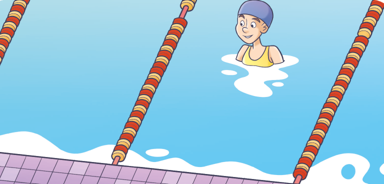Reinaldo Rosa/Acervo da Editora

1. Troque ideias com seu colega e respondam em seus cadernos às questões.
a) Como podemos calcular quantos metros Mariana nadou nessa aula?
b) Quantos metros Mariana nadou nesse dia?
60
UNIDADE 2 - CAPÍTULO 2
Multiplicação
A situação apresentada inicialmente tem como objetivo promover uma discussão sobre as estratégias que os alunos podem utilizar para calcular quantos metros Mariana nadou em sua aula de natação. Em um primeiro momento, pretende-se que os alunos apresentem estratégias para a solução do problema, interpretando matematicamente uma situação do cotidiano. Como a piscina tem 18 metros de comprimento, a cada ida e volta Mariana nada 36 metros. Nessa aula, ela separou 25 flutuadores, os quais representam que ela nadou 25 vezes 36 metros. Portanto, Mariana nadou 25 x 36 = 900 metros.
As situações apresentadas na sequência visam explorar algumas ideias associadas à multiplicação. Na situação 2 temos a multiplicação em sua ação aditiva. Ao entender que a multiplicação ocorre quando temos várias vezes a mesma quantidade,
60
Nesse momento, estudaremos as operações de multiplicação e divisão, veremos em cada uma delas como as grandezas envolvidas nas situações-problema são de naturezas distintas, enquanto que nas situações aditivas o todo é obtido pela soma das partes, sendo que estas partes são grandezas ou quantidades de uma mesma natureza.
Para um melhor entendimento, vamos usar 4 exemplos:
Exemplo 1. Podemos adicionar 12 laranjas com 27 limões e obter 39 frutas. Nesse caso, tanto as quantidades adicionadas quanto o total obtido são de uma mesma natureza.
Exemplo 2. Uma caixa de bombom tem 12 bombons. Quantos bombons nós teremos se comprarmos 5 dessas caixas? Nessa situação temos duas variáveis distintas, caixas e bombons. Se 1 caixa tem 12 bombons, 5 caixas corresponderão a 5 vezes essa quantidade de bombons.
Exemplo 3. Temos 45 livros para dividir entre 9 crianças. Quantos livros receberá cada criança? Nessa situação temos duas grandezas distintas envolvidas, livros e crianças.
Exemplo 4. Temos 42 rosas para fazer arranjos, com 6 rosas cada um. Quantos arranjos de flores serão formados? Nesse caso, as grandezas envolvidas são rosas e arranjos.
EF06MA03
Situação 2
O irmão de Mariana também faz aulas de natação. Porém, a piscina em que ele nada tem 25 metros de comprimento. Nesse mesmo dia, ele nadou 52 piscinas. Quantos metros ele nadou?
Para saber o quanto ele nadou podemos realizar uma multiplicação, observe:
Algoritmo usual:
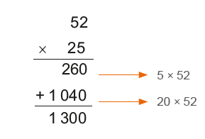
Algoritmo por decomposição:
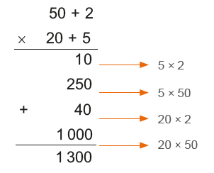
Note que 52 × 25 é o mesmo que adicionar 52 vezes o 25, ou seja,

Ele nadou 1 300 metros.
A multiplicação é uma operação matemática que está associada às ideias de adicionar parcelas iguais, de quantidade de combinações, de propor-cionalidade e de contar elementos em uma organização retangular.
Os termos da multiplicação são:

Há dois símbolos que podem ser usados para representar a multiplicação, observe:
25 × 52 = 25 ∙ 52 = 1 300
UNIDADE 2 - CAPÍTULO 2
61
o aluno terá compreendido o que é multiplicar. Lembramos que ao realizar 52 x 25 ou 25 x 52, obtemos o mesmo resultado, porém as multiplicações não representam a mesma situação. Quando escrevemos 52 x 25, representamos que foram nadados 52 vezes 25 metros. Ao escrevermos 25 x 52, estamos representando que foram nadados 25 vezes 52 metros, o que não ocorre, pois a piscina na situação-problema tem 25 metros. É importante discutir com os alunos esta diferença. A propriedade comutativa da multiplicação afirma que a ordem dos fatores não altera o produto, ou seja, posso inverter os números que o resultado será o mesmo, porém ela não afirma que a situação é a mesma, somente o resultado. Por isso, precisamos ter cuidado em relação aos dados que são apresentados em uma situação-problema, pois ao trocar a ordem dos fatores o produto não se altera, porém altera a interpretação da situação proposta.
61
Na situação apresentada nessa página, temos a ideia combinatória da multiplicação. Em ações combinatórias, a inversão dos fatores não altera a quantidade de combinações. Na situação apresentada, utilizamos um diagrama de árvore. Essa maneira de representação é bastante utilizada quando queremos descobrir a quantidade de combinações que são possíveis de serem feitas.
EF06MA03
Situação 3
Após a aula, Mariana sempre faz um lanche na cantina da escola de natação. Veja na placa as opções de sucos, sanduíches naturais e gelatina que o estabelecimento oferece.
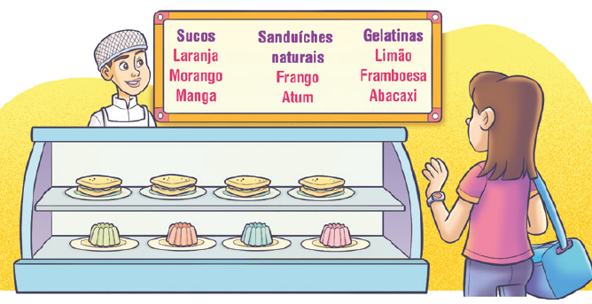Reinaldo Rosa/Acervo da Editora
Se Mariana escolhe sempre um suco, um sanduíche e uma gelatina, quan-tas possibilidades de lanches diferentes ela tem?
Observe:
UNIDADE 2 - CAPÍTULO 2
62
62
Na situação 4, temos a ideia de proporcionalidade. De acordo com Toledo e Toledo (1997, p. 137), a proporcionalidade constitui um dos temas de maior importância no ensino da Matemática, pois é a partir dela que se formam as noções de razão, proporção, número racional, medidas, regra de três, porcentagem, probabilidade, semelhança de figuras, escalas e entre outras.
Na situação 5, é apresentada a noção de configuração retangular que está fortemente articulada com a ideia de superfície e prepara o aluno para o conceito de área. Nela, utiliza-se a noção de linhas e colunas, que podem ou não ser representadas em malhas quadriculadas.
EF06MA03
Mariana tem 18 possibilidades diferentes de lanches.
Essa situação também pode ser representada por meio de uma multiplicação:
3 × 2 × 3 = 18
Situação 4
Mariana e seu irmão gastam 12 reais por dia para ir à escola de natação. Quantos reais eles gastam em uma quinzena?
Em uma quinzena eles têm quatro dias de aula de natação. Então:
1 dia → 12 reais
2 dias → 24 reais
3 dias → 36 reais
4 dias → 48 reais
Podemos representar essa situação por uma multiplicação:
4 × 12 = 48
Mariana e seu irmão gastam 48 reais por quinzena para irem à aula de natação.
Situação 5
Na escola de natação, uma das piscinas está fechada porque estão trocando o piso ao lado da piscina. Observe: Reinaldo Rosa/Acervo da Editora
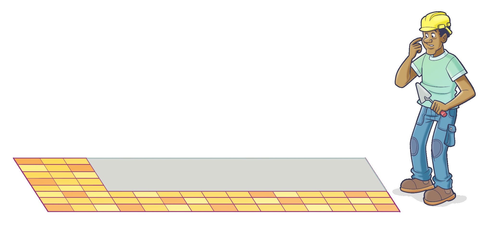Para sabermos quantas lajotas ainda faltam para serem colocadas, podemos fazer:
5 × 12 = 60
Portanto, ainda faltam 60 lajotas para serem colocadas.
UNIDADE 2 - CAPÍTULO 2
63
63
Encontre Soluções
Atividade 1
Serão necessários: 12 ovos, 12 batatas grandes, 90 g de fermento, 12 colheres de sobremesa de óleo, 6 colheres de sopa de margarina, 3 colheres de sobremesa de sal, 3 copos de leite, 3 xícaras de chá de açúcar, 2 100 g ou 2 kg e 100 g de farinha de trigo.
Atividade 8
a) 45 ∙ 2 = 40 ∙ 2 + 5 ∙ 2 = 80 + 10 = 90
b) 102 ∙ 3 = 100 ∙ 3 + 2 ∙ 3 = 300 + 6 = 306
c) 73 ∙ 4 = 70 ∙ 4 + 3 ∙ 4 = 280 + 12 = 292
d) 110 ∙ 5 = 100 ∙ 5 + 10 ∙ 5 = 500 + 50 = 550
e) 32 ∙ 50 = 30 ∙ 50 + 2 ∙ 50 = 1 500 + 100 = 1 600
f) 41 ∙ 20 = 40 ∙ 20 + 1 ∙ 20 = 800 + 20 = 820
EF06MA03
ENCONTRE SOLUÇÕES
1. Lúcia recebeu uma encomenda para fazer 120 pães de batata para uma confeitaria. Veja a seguir a receita para fazer 40 pães.
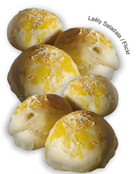Pão de batata
Ingredientes
- 4 ovos
- 4 batatas grandes
- 30 g de fermento
- 4 colheres de sobremesa de óleo
- 2 colheres de sopa de margarina
- 1 colher de sobremesa de sal
- 1 copo de leite
- 1 xícara de chá de açúcar
- 700 g de farinha de trigo
► Registre, no caderno, a quantidade de ingredientes que ela irá precisar para fazer os 120 pães.
2. Em seu caderno, represente as adições a seguir por meio de uma multiplicação.
a) 34 + 34 + 34 + 34 + 34 5 · 34
b) 105 + 105 + 105 + 105 + 105 + 105 6 . 105
c) 67 + 67 + 67 + 67 4 . 67
3. No caderno, calcule as multiplicações a seguir.
a) 136 ∙ 19 2 584
b) 408 ∙ 25 10 200
c) 374 ∙ 111 41 514
d) 1 247 ∙ 13 16 211
4. Mônica tem uma loja de doces na qual vende diversas caixas de bombons. Veja a seguir algumas destas caixas.
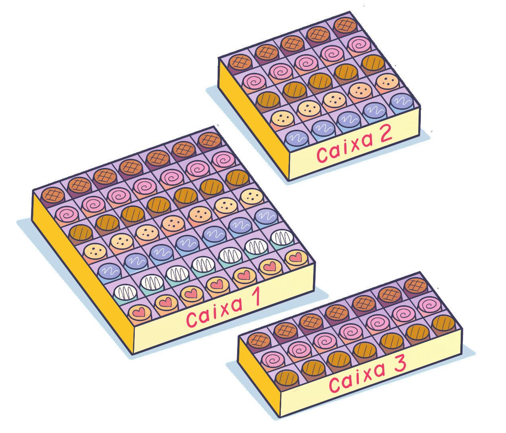► Em seu caderno, represente por meio de uma multiplicação a quantidade de bombons que há em cada caixa. Caixa 1 → 7 · 7; Caixa 2 → 5 · 5; Caixa 3 → 3 · 7.
5. Júnior tem 65 bolinhas de gude, Marcos tem o triplo da quantidade de Júnior e Bruno tem o dobro da quantidade de Marcos. Quantas bolinhas de gude tem Bruno? 65 · 3 = 195; 195 · 2 = 390. Bruno tem 390 bolinhas.
6. Na cantina da escola em que Luiz estuda, há 3 sabores de sucos e 5 tipos de salgados. Quantas possibilidades de escolha Luiz tem para 1 suco e 1 salgado? 3 · 5 = 15. Luiz tem 15 opções de escolha.
7. Uma loja resolveu codificar seus produtos usando uma vogal e um algarismo (de 0 a 9). Por exemplo: produto A0 e produto A1. Quantos códigos serão possíveis formar? Como temos 5 vogais e 10 algarismos, a quantidade de códigos é dada por 5 · 10 = 50. É possível formar 50 códigos.
UNIDADE 2 - CAPÍTULO 2
64
Atividade 15
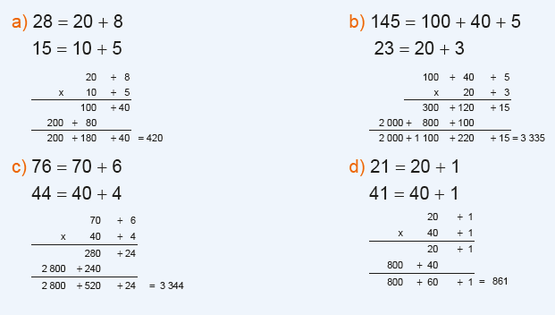64
Atividade 9
Na coluna das unidades, tem-se: 7 + 5 = 12, vai 1 para a coluna das dezenas;
Na coluna das dezenas, tem-se: 1 + ♣ + 9 = 10 + ♣, o algarismo das dezenas do resultado é ♣ e vai 1 para a coluna das centenas;
Na coluna das centenas, tem-se: 1 + 4 + 8 = 13, o algarismo das centenas da soma é 3 e vai 1 para a coluna dos milhares.
Em resumo, concluímos que 1♣♣2 = 13♣2, o que nos mostra que ♣ = 3 (e a conta é 437 + 895 = 1332). Logo
♣ x ♣ + ♣ = 3 x 3 + 3 = 12.
EF06MA03
8. Veja como Manuela pensou para calcular mentalmente 36 ∙ 2.
Observe o raciocínio que Manuela teve:
36 ∙ 2 = 30 ∙ 2 + 6 ∙ 2 = 60 + 12 = 72
► Faça como Manuela e calcule mentalmente as multiplicações a seguir.
a) 45 ∙ 2
b) 102 ∙ 3
c) 73 ∙ 4
d) 110 ∙ 5
e) 32 ∙ 50
f) 41 ∙ 20
9. (OBMEP) Na adição abaixo, o símbolo ♣ representa um mesmo algarismo. Qual é o valor de ♣ × ♣ + ♣ ?

a) 6
b) 12
c) 20
d) X 42
10. Roberto comprou um refrigerador e deu 235 reais de entrada e o restante pagou em 6 parcelas de 210 reais. Quanto custou esse refrigerador?
235 + 6 · 210 = 235 + 1 260 = 1 495 O refrigerador custou 1 495 reais.
11. Calcule mentalmente.

a) 87 ∙ 10 870
b) 108 ∙ 10 1 080
c) 95 ∙ 100 9 500
d) 336 ∙ 100 33 600
e) 54 ∙ 1 000 54 000
f) 281 ∙ 1000 281 000
12. Uma escola tem 12 turmas nos anos finais do Ensino Fundamental.
Se cada turma tem, em média, 34 alunos, quantos alunos,
aproximadamente, têm os anos finais do Ensino Fundamental?
12 · 34 = 408
Tem aproximadamente 408 alunos.
13. Todos os dias, no restaurante de Juliano, são oferecidas na hora do almoço, 3 opções de salada como entrada, 2 opções de pratos principais com carnes diferentes e 3 opções de sobremesa. Um cliente que almoça todos os dias nesse restaurante terá quantas possibilidades de refeição escolhendo sempre uma salada, um prato principal e uma sobremesa?
3 · 2 · 3 = 18
Ele terá 18 possibilidades de refeição.
14. Em um supermercado há 38 pacotes de 5 kg de arroz cada um. Sabendo que o quilograma do arroz custa 3 reais, quantos reais o dono desse supermercado faturará ao vender todos os pacotes?
38 · 5 · 3 = 570
Faturará 570 reais.
15. Utilizando a decomposição, calcule as operações a seguir.
a) 28 ∙ 15 420
b) 145 ∙ 23 3 335
c) 76 ∙ 44 3 344
d) 21 ∙ 41 861
e) 102 ∙ 48 4 896
f) 14 ∙ 91 1 274
g) 25 ∙ 25 625
h) 54 ∙ 46 2 484
16. Com uma calculadora, quais as teclas que você pode usar para encontrar o resultado 2 400 usando somente a operação de multiplicação e as seguintes teclas: 1 200 · 2 = 2 400; 12 · 100 · 2 = 2 400. Instigue os alunos a encontrarem outras multiplicações com mais fatores.
65
UNIDADE 2 - CAPÍTULO 2
65
Atividade 18
Nesta atividade, solicite aos alunos que elaborem um problema e troquem de caderno com um colega, resolvendo juntos a situação elaborada. Atividades assim devem ser incentivadas para levantar nos alunos a empatia e a cooperação, como previsto na Competência geral 9 e a específica de matemática 8. Fale, durante a atividade, sobre a importância de respeitar a opinião do colega e a importância de valorizar as diferenças de cada um.
EF06MA03
17. Quais teclas podem ser usadas para encontrar o resultado da multiplicação 4 · 5 sem usar a tecla de multiplicação? 5 + 5 + 5 + 5 ou 4 + 4 + 4 + 4 + 4
18. Observe as imagens a seguir.
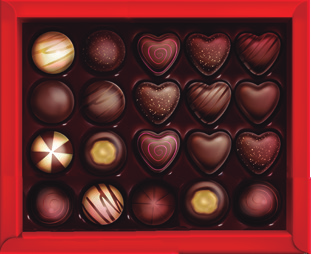 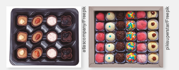► Em seu caderno, elabore um problema sobre multiplicação de números naturais usando as imagens como referência. Em seguida, troque seu caderno com um colega para que ele resolva o problema elaborado por você. Juntos, verifiquem se os problemas resolvidos estão corretos. Resposta pessoal.
Propriedades da multiplicação
Observe as seguintes multiplicações:
23 ∙ 15 = 345
15 ∙ 23 = 345
Note que ao trocarmos a ordem dos fatores o resultado final não se altera.
Na multiplicação de dois números naturais, a ordem dos fatores não altera o resultado final. Esta é a propriedade comutativa da multiplicação.
Agora, observe duas formas diferentes de realizar as seguintes multiplicações:
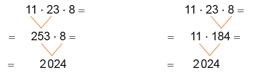Note que ao associarmos os fatores de modos diferentes não se altera o produto. Na multiplicação de três ou mais números naturais, podemos associar os fatores de maneiras diferentes que o produto não se altera. Esta é a propriedade associativa da multiplicação.
Vejamos a seguir outra propriedade da multiplicação.
35 ∙ 1 = 1 ∙ 35 = 35
1 ∙ 79 = 79 ∙ 1 = 79
Note que ao multiplicarmos o número 1 a qualquer número natural, o resultado é o próprio número. Esta é a propriedade do elemento neutro da multiplicação.
UNIDADE 2 - CAPÍTULO 2
66
Vamos conhecer outro método para realizar uma multiplicação. Apresente aos alunos e estimule-os a realizar algumas multiplicações por meio dele.
Método em reticulado
Não se sabe exatamente quando surgiu, mas este método ainda hoje é usado em algumas escolas na França. Ele também é conhecido como método em célula ou em gelosia. Gelosia em italiano quer dizer grade.
Vejamos como realizar a multiplicação 245 × 61 utilizando este procedimento.
Vamos colocar os algarismos em células para evitar erros, tais como, na soma final e posicionar a dezena embaixo da unidade.
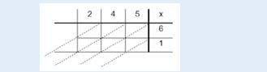Podemos iniciar as multiplicações por qualquer uma das células. Vamos multiplicar 2 × 6. Deve-se colocar o resultado da multiplicação na célula correspondente aos dois fatores, inserindo o algarismo das unidades (2) embaixo e o das dezenas (1) na parte de cima da diagonal.
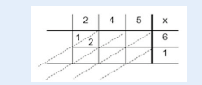Após realizar todas as multiplicações, deve-se somar os números de cada uma das diagonais. Caso a soma seja superior a 10, deve-se levar o algarismo das dezenas para a próxima diagonal.
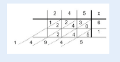Proponha aos alunos que realizem outras multiplicações utilizando este método.
EF06MA03
Agora, veremos como calcular outro produto.
3 ∙ (12 + 22) =
= (12 + 22) + (12 + 22) + (12 + 22) = → aplicando a definição de multiplicação
= 12 + 22 + 12 + 22 + 12 + 22 = → aplicando a propriedade associativa
= 12 + 12 + 12 + 22 + 22 + 22 = → aplicando a propriedade comutativa
= 3 ∙ 12 + 3 ∙ 22
Logo, temos que:
3 ∙ (12 + 22) = 3 ∙ 12 + 3 ∙ 22
Em uma multiplicação de um número natural por uma adição de duas ou mais parcelas, obtemos o mesmo resultado que adicionando os produtos da multiplicação de cada uma dessas parcelas por esse número natural. Esta é a propriedade distributiva da multiplicação.
1. Nas expressões a seguir, identifique qual foi a propriedade aplicada.
a) 36 ∙ 45 = 45 ∙ 36 Propriedade comutativa.
b) 1 ∙ 5 = 5 Propriedade do elemento neutro.
c) 18 ∙ (23 + 44) = 18 ∙ 23 + 18 ∙ 44 Propriedade distributiva.
d) 25 ∙ (10 ∙ 13) = (25 ∙ 10) ∙ 13 Propriedade associativa.
2. Resolva as expressões em seu caderno, aplicando a propriedade distributiva.
a) 8 ∙ (13 + 17) = 8 · 13 + 8 · 17 = 104 + 136 = 240
b) 11 ∙ (10 + 22) = 11 · 10 + 11 · 22 = 110 + 242 = 352
c) 21 ∙ (19 - 15) = 21 · 19 − 21 ·15 = 399 − 315 = 84
d) 35 ∙ (24 - 8) = 35 · 24 − 35 · 8 = 840 − 280 = 560
3. Leia o texto abaixo.
Uma das maravilhas do cálculo: podemos formar um número qualquer empregando apenas quatro quatros. (Malba Tahan).
Forme duas expressões numéricas usando, obrigatoriamente, quatro quatros e utilizando, no máximo, três operações (adição, subtração, multiplicação), tendo como resultado números de 0 a 10. Exemplo:
4 + 4 - 4 - 4 = ou 44 - 44 = 0
= 8 - 4 - 4 =
= 4 - 4 =
= 0
Temos, então, quatro quatros formando expressões numéricas em que o resultado é igual a 0 (zero). Agora é a sua vez!
Júlio César de Melo e Souza (Malba Tahan) nasceu no Rio de
Janeiro em 6 de maio de 1895. Foi escritor e matemático
brasileiro. Seus livros eram de recreações matemáticas, fábulas
e lendas passadas no Oriente. Seu livro mais conhecido é O homem
que calculava.
(4 – 4) · 4 + 4 = 0 · 4 + 4 = 4
4 + 4 + 4 – 4 = 8
UNIDADE 2 - CAPÍTULO 2
67
67
Divisão
Na primeira situação-problema apresentada temos a ideia de medir da divisão. Precisamos saber quantas prateleiras serão necessárias para arrumar 216 títulos, sabendo que cabem aproximadamente 9 livros em cada prateleira. Na ideia de medir, a natureza do resultado é diferente da natureza da grandeza que foi dividida (livros/prateleiras).
Na segunda situação-problema temos a ideia de repartir igualmente. Precisamos repartir 584 livros de ficção para 4 escolas. Nesse caso, a natureza do resultado é igual à natureza da grandeza que foi dividida. Normalmente, essa ideia é a mais enfatizada.
Em ambas as situações foram apresentadas duas formas diferentes de resolução. Utilizou-se o algoritmo padrão e a divisão por partes. Outras estratégias de resolução podem ser usadas. Pode-se, por exemplo, utilizar o processo curto da divisão para solucionar as situações. Observe:
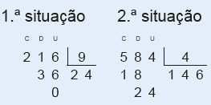Na divisão por partes, os alunos distribuem as quantidades da forma como percebem, sem uma ordem preestabelecida. É uma técnica flexível e não há obrigatoriedade de seguir uma determinada ordem. Essa forma de divisão é ótima para dividir números naturais. Mais adiante, quando formos realizar divisões com números decimais, em que precisaremos resolver divisões com décimos, centésimos ou milésimos, não será possível usar essa técnica.

UNIDADE 2 - CAPÍTULO 2
68
68
Algoritmo da divisão
Na divisão, temos uma grande discussão entre os professores sobre qual método deve ser utilizado. O algoritmo que denominamos aqui de usual corresponde ao processo longo, denominado também de processo euclidiano de divisão. Nele a subtração é indicada na divisão, aparecendo o produto do quociente pelo divisor.
No processo curto da divisão só é mostrado o resultado da subtração entre o dividendo e o produto do quociente pelo divisor.
Na divisão por partes, o processo está relacionado à ideia de “repartir igualmente”. Neste processo, no seu limite, chega-se ao processo euclidiano. No processo euclidiano, o que se faz é procurar o maior número possível de ser colocado no quociente, onde já se obtém o resto menor que o divisor.
UNIDADE 2 - CAPÍTULO 2
69
69
Relação fundamental da divisão
Na situação apresentada é possível perceber que o resto é menor que o quociente, e para saber o número mínimo de caixas que Manuela irá precisar é necessário considerá-lo. Neste caso, como cada caixa cabe 12 livros, e após a divisão ainda sobram 6 livros, é necessário mais uma caixa. Faça esta reflexão com os alunos, sobre a importância de se avaliar o valor encontrado no quociente e no resto.
Após a reflexão, mostre como o valor do dividendo está relacionado aos valores encontrados para o quociente e o resto, a partir do valor do divisor. Esta relação permite que possamos verificar se a operação de divisão realizada foi feita corretamente. Converse com os alunos sobre a importância de revisitar os cálculos e utilizar as relações conhecidas para verificar se os cálculos realizados estão corretos.
Proponha aos alunos outras divisões, sendo elas exatas e não exatas para que resolvam no caderno, e aplicando a relação fundamental da divisão verifiquem se realizaram a operação corretamente.
EF06MA03
Atenção!
1. A divisão entre dois números naturais nem sempre é um número natural. Exemplo:
5 : 2 = 2,5
2. A divisão de 0 (zero) por um número natural, diferente de 0, é igual a 0. Exemplo:
0 : 12 = 0
3. Na divisão de dois números naturais iguais, diferentes de 0, o quociente é igual a 1. Exemplo:
34 : 34 = 1
4. Não existe divisão por zero.
Por exemplo, na operação 35 : 0, não há um número que multiplica-do por 0 seja igual a 35.
5. Uma divisão é exata quando o resto é igual a 0.
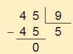6. Uma divisão é não exata quando o resto é diferente de 0.
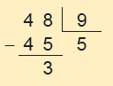Relação fundamental da divisão
Manuela está organizando os livros de sua casa. Ela tem em sua biblioteca 126 livros e irá colocá-los em caixas. Em cada uma delas cabem 12 livros. De quantas caixas Manuela precisará, no mínimo, para guardar os livros?
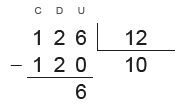Note que ela irá precisar de 10 caixas para guardar 120 livros. Porém, ainda sobram 6 livros. Então, nesse caso, ela precisará, no mínimo, de 11 caixas.
126 = 10 . 12 + 6
UNIDADE 2 - CAPÍTULO 2
70
70
Encontre Soluções
Atividade 1
2 500 - 754 = 1 746
1 746 : 2 = 873
873 + 754 = 1 627
Manoel recebeu 1 627 reais e Lucas recebeu 873 reais.
Atividade 9
Essa atividade possibilita aos alunos que desenvolvam o sentido de empatia e cooperação, contribuindo com os aspectos previstos na Competência geral 9 e específica da matemática 8.
Os argumentos e as reflexões gerados na realização dessas atividades, auxiliam na construção de um repertório que possibilita aos alunos continuar aprendendo e colaborar de modo positivo na sociedade, como sugere a Competência geral 1.
EF06MA03
Em uma divisão temos:
Dividendo = quociente ∙ divisor + resto
Atenção!
Em uma divisão, o resto é sempre menor que o divisor.
ENCONTRE SOLUÇÕES
1. Um prêmio de 2 500 reais deverá ser dividido entre Lucas e Manoel. Sabendo que Lucas recebeu 754 reais a menos que Manoel, quanto recebeu cada um? Manoel recebeu 1 627 reais e Lucas, 873 reais.
2. Observe como Marcos realizou uma divisão mentalmente:
► Agora é a sua vez! Calcule mentalmente as divisões a seguir.
a) 555 : 5 = (500 + 55) : 5 = 100 + 11 = 111
b) 836 : 4 = (800 + 36) : 4 = 200 + 9 = 209
c) 1 260 : 3 = (1 200 + 60) : 3 = 400 + 20 = 420
d) 4 248 : 6 = ( 4 200 + 48) : 6 = 700 + 8 = 708
3. As divisões a seguir não são exatas. Qual é o resto em cada uma delas?
a) 203 : 15 = 13 · 15 + 8; resto 8
b) 407 : 18 = 22 · 18 + 11; resto 11
c) 543 : 12 = 45 · 12 + 3; resto 3
d) 788 : 27 = 29 · 27 + 5; resto 5
4. Calcule:
a) a metade de 2 486 2 486 : 2 = 1 243
b) a terça parte de 1 341 1 341 : 3 = 447
c) a quarta parte de 5 800 5 800 : 4 = 1 450
5. Uma pessoa ganha 28 reais por hora de trabalho. No mês passado, essa pessoa recebeu 3 500 reais. Quantas horas ela trabalhou no mês? 3 500 : 28 = 125 horas.
6. Márcia pagou 86 reais por duas blusas. Quanto ela pagou em cada uma, sabendo que uma delas custou 4 reais a mais que a outra? 86 − 4 = 82; 82 : 2 = 41; 41 + 4 = 45 Uma blusa custou 41 reais e a outra custou 45 reais.
7. Em uma divisão, o divisor é o número 23. Qual é o maior número que podemos obter para o resto? 22
8. Na divisão de um número natural por 14, o quociente é igual a 8 e o resto é o maior número natural possível. Qual é o número do dividendo? 8 · 14 + 13 = 112 + 13 = 125
9. Observa a imagem a seguir.
► Em seu caderno, elabore um problema sobre divisão de números naturais usando a imagem como referência. Em seguida, troque seu caderno com um colega para que ele resolva o problema elaborado por você. Juntos, verifiquem se os problemas resolvidos estão corretos. Resposta pessoal.
UNIDADE 2 - CAPÍTULO 2
71
71
Encontre Soluções
Atividade 2
a) Pode-se representar a situação por meio de duas expressões diferentes: 48 + 12 - 9 - 11 + 6 - 14; ou podemos agrupar a quantidade de bolinhas que ele ganhou e a quantidade que ele perdeu, fazendo, posteriormente, a subtração. Veja: (48 + 12 + 6) - (9 + 11 + 14). (48 + 12 + 6) - (9 + 11 + 14) = (60 + 6 ) - (20 + 14) = 66 - 34 = 32 Marcos ficou com 32 bolinhas de gude.
b) 578 - 120 + 134 = 458 + 134 = 592 O navio chegou em Montevideo com 592 passageiros.
c) 367 - 62 + 159 - 55 - 112 ou (367 + 159) - (62 + 55 + 112) 367 - 62 + 159 - 55 - 112 = = 305 + 159 - 55 - 112 = = 464 - 55 - 112 = = 409 - 112 = = 297
EF06MA03
Expressões numéricas
Nas expressões numéricas que envolvem adição, subtração, multiplicação e divisão, primeiramente se resolvem as multiplicações e divisões na ordem em que aparecem e depois as adições e subtrações, respeitando a respectiva ordem, observe:
42 + 16 ∙ 3 - 48 : 6 =
= 42 + 48 - 8 =
= 90 - 8 =
= 82
Em expressões que aparecem parênteses, colchetes e chaves, resolve-mos primeiramente o que está dentro dos parênteses ( ); na sequência, o que está dentro dos colchetes [ ] e, a seguir, o que está dentro das chaves { }.
Observe:
88 + {105 - [46 : 2 + (54 - 46) ∙ 3] - 11} =
= 88 + {105 - [46 : 2 + 8 ∙ 3] - 11} =
= 88 + {105 - [23 + 24] - 11} =
= 88 + {105 - 47 - 11} =
= 88 + {58 - 11} =
= 88 + 47 =
= 135
ENCONTRE SOLUÇÕES
1. No caderno, calcule o valor das expres-a) Marcos tinha 48 bolinhas de gude
a) 43 + 55 - 62 - 11 = 98 − 62 − 11 = 36 − 11 = 25
b) 176 - 65 - ( 46 + 13) = 176 − 65 − 59 = 111 − 59 = 52
c) (84 - 26) - (19 + 7) = 58 − 26 = 32
d) 157 + 21 - (45 + 8) - (34 + 10) = 157 + 21 − 53 − 44 = 178 − 53 − 44 = 125 − 44 = 81
e) (46 - 32) + (45 - 18 + 22) - 34 = 14 + (27 + 22) − 34 = 14 + 49 − 34 = 63 − 34 = 29
f) 35 + (16 - 8) - (56 - 23) = 35 + 8 − 33 = 43 − 33 = 10
2. Represente as situações a seguir por meio de uma expressão e, depois, resolva-as.
a) Marcos tinha 48 bolinhas de gude quando começou a jogar com o seu irmão. Durante cinco rodadas ele ganhou 12 bolinhas na primeira, perdeu 9 na segunda, perdeu 11 na terceira, ganhou 6 na quarta e perdeu 14 na quinta. Ao final do jogo, com quantas bolinhas Marcos ficou? 32 bolinhas de gude.
b) No verão, é comum os cruzeiros na costa da América do Sul. Um cruzeiro saiu do Rio de Janeiro com 578 passageiros a bordo. Em uma parada em Santos desembarcaram do navio 120 passageiros e embarcaram 134, seguindo então para o Porto de Montevideo. Com quantos passageiros o navio chegou em Montevideo? 592 passageiros.
UNIDADE 2 - CAPÍTULO 2
72
72
Atividade 5
a) (4 ∙ 26 + 3 ∙ 27 + 5 ∙ 22) - 12 = (104 + 81 + 110) - 12 = 295 - 12 = 283 Terminaram o ano 283 alunos.
b) (4 ∙ 5 + 3 ∙ 20 + 2 ∙ 8) : 3 = (20 + 60 + 16) : 3 = 96 : 3 = 32 Cada um pagou 32 reais.
c) (16 ∙ 23 + 12 ∙ 35 + 18 ∙ 28) : 4 = (368 + 420 + 504) : 4 = 1 292 : 4 = 323 O valor de cada prestação é 323 reais.
Atividade 6
a) (14 + 6) ∙ 5 - 11 =
= 20 ∙ 5 - 11 =
= 100 - 11 =
= 89
b) 105 - (32 + 63 : 7) =
= 105 - (32 + 9) =
= 105 - 41 =
= 64
c) 12 + 5 ∙ (38 - 10 ∙ 3) : 2 =
= 12 + 5 ∙ (38 - 30) : 2 =
= 12 + 5 ∙ 8 : 2 =
= 12 + 40 : 2 =
= 12 + 20 =
= 32
d) [50 - 2 ∙ (10 - 4) + 22] - 82 : 2 =
= [50 - 2 ∙ 6 + 22] - 41 =
= [50 - 12 + 22] - 41 =
= [38 + 22] - 41 =
= 60 - 41 =
= 19
e) 180 - 3 ∙ {30 + [25 : 5 + (13 - 7) + 2] - 9} =
= 180 - 3 ∙ {30 + [25 : 5 + 6 + 2] - 9} =
= 180 - 3 ∙ {30 + [5 + 6 + 2] - 9} =
= 180 - 3 ∙ {30 + 13 - 9} =
= 180 - 3 ∙ {43 - 9} =
= 180 - 3 ∙ 34 =
= 180 - 102 =
= 78
EF06MA03
c) Carlos tinha 367 reais e pagou a conta de luz no valor de 62 reais. Depois, ganhou 159 reais do seu irmão e aproveitou para pagar a conta de água no valor de 55 reais. Em seguida, comprou alguns produtos no supermercado, gastando 112 reais. Com quantos reais ele ficou? 297 reais.
3. Copie as expressões a seguir no caderno e coloque um parênteses para tornar as igualdades verdadeiras.
a) 45 + 52 - ( 27 + 16 ) = 54
b) 73 - (28 + 12) - 9 = 24
4. (OBMEP) Amanda desenhou a seguinte figura:
Observe que a soma ao longo de qualquer lado do triângulo é sempre a mesma, pois, como podemos verificar,
1 + 3 + 6 = 6 + 2 + 2 = 1 + 7 + 2.
► Complete os números que faltam nos círculos da figura a seguir de modo que as somas ao longo de qualquer lado do quadrado sejam sempre as mesmas.
Na linha inferior, a soma é igual a 10. Dessa forma, todas as linhas devem somar 10. Completando a linha superior, temos que o número que falta é 2. Agora é só completar as duas outras linhas. Na primeira linha vertical, o número que falta é 1 e na outra linha vertical o número do meio é igual a 3. 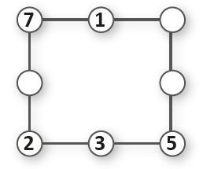5. Em seu caderno, represente as situações a seguir por meio de uma expressão numérica e calcule o que se pede.
a) No colégio de Junior havia 4 turmas de 1.º ano com 26 alunos cada, 3 turmas de 2.º ano com 27 alunos cada e 5 turmas de 3.º ano com 22 alunos cada uma. Sabendo que desse total de alunos, 12 pediram transferência na metade do ano, quantos alunos terminaram o ano entre as turmas de 1.º, 2.º e 3.º anos?
b) João, Luciana e Eliane foram ao restaurante almoçar e pediram 4 sucos que custam 5 reais cada um, 3 pratos executivos de 20 reais cada um e 2 sobremesas de 8 reais cada uma. Ao final decidiram dividir a conta igualmente entre os três. Quanto cada um pagou?
c) Para presentear as crianças de uma creche no Dia das Crianças, um grupo de amigas comprou 16 bolas de 23 reais cada uma, 12 bonecas de 35 reais cada uma e 18 carrinhos de 28 reais cada um. Elas parcelaram o valor total em 4 prestações. Qual é o valor de cada prestação?
6. Em seu caderno, calcule o valor das seguintes expressões:
a) (14 + 6) ∙ 5 - 11 = 89
b) 105 - (32 + 63 : 7) = 64
c) 12 + 5 ∙ (38 - 10 ∙ 3) : 2 = 32
d) [50 - 2 ∙ (10 - 4) + 22] - 82 : 2 = 19
e) 180 - 3 ∙ {30 + [25 : 5 + (13 - 7) + 2] - 9} = 78
UNIDADE 2 - CAPÍTULO 2
73
73
Atividade 8
A quantidade de água que Daniela gastava por semana (isto é, em 7 dias) em cada atividade era:
► lavar roupa: 7 ∙ 150 = 1 050 litros;
► banho de 15 minutos: 7 ∙ 90 = 630 litros;
► lavar o carro com mangueira: 1 ∙ 100 = 100 litros.
Assim, ela gastava 1 050 + 630 + 100 = 1 780 litros por semana. Com a economia, Daniela passou a gastar semanalmente em cada atividade:
► lavar roupa: 3 ∙ 150 = 450 litros;
► banho de 5 minutos: 7 ∙ 30 = 210 litros;
► lavar o carro com balde: 1 ∙ 10 = 10.
Ou seja, um total de 450 + 210 + 10 = 670 litros. Portanto, ela passou a economizar por semana 1 780 - 670 = 1 110 litros de água.
Podemos também representar a situação por meio de uma expressão numérica, observe:
(7 x 150 + 7 x 90 + 100) - (3 x 150 + 7 x 30 + 10) = = (1 050 + 630 + 100) - (450 + 210 + 10) = = (1 680 + 100) - (660 + 10) = 1 780 - 670 = = 1 110
Ela passou a economizar 1 110 litros por semana.
EF06MA03
7. Utilizando uma calculadora, identifique quais as teclas com os sinais de +, –, × ou ÷ devem ser usadas entres os números para tornar as expressões verdadeiras.
a)
÷, -
b)
x, +
8. (OBMEP) Daniela fez um quadro mostrando a quantidade de água que gastava em algumas de suas atividades domésticas.
► Para economizar água, ela reduziu a lavagem de roupa a 3 vezes por semana, o banho diário a 5 minutos e a lavagem semanal do carro a apenas um balde de 10 litros. Quantos litros de água ela passou a economizar por semana?
a) 1 010
b) X 1 110
c) 1 210
d) 1 211
e) 1 310
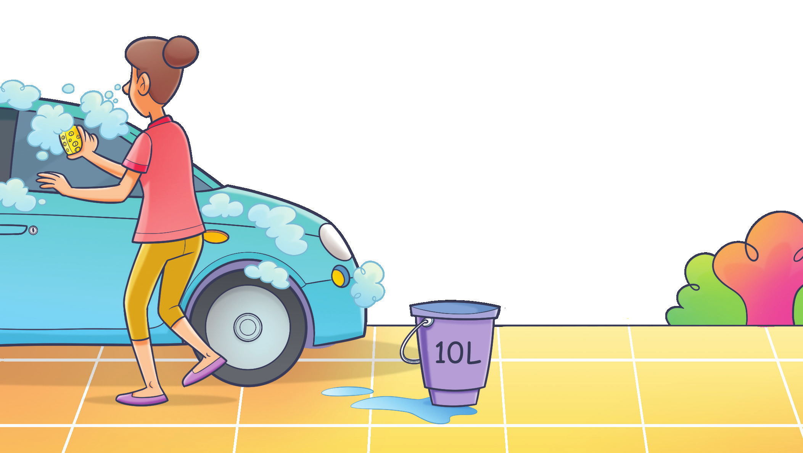74
UNIDADE 2 - CAPÍTULO 2
74